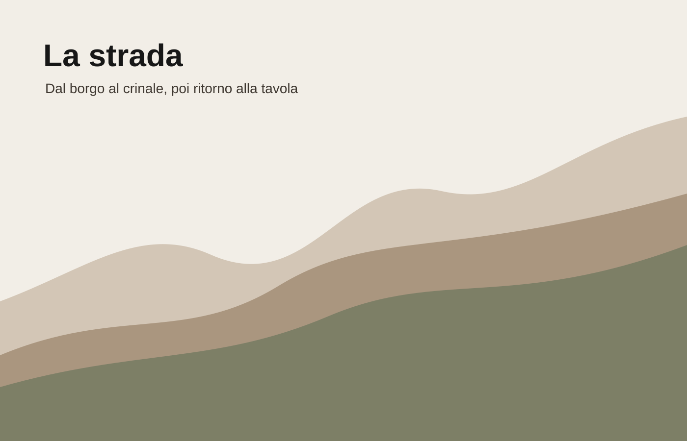

Il percorso
Dal borgo al crinale, poi di nuovo alla tavola.
Stracrösa è pensata come una visita lenta: distanze brevi, tappe leggibili, una salita che diventa racconto e un rientro conviviale.

1
Il borgo
Il punto di partenza e di ritorno.
Il punto di partenza e di ritorno.
2
Vigneti bassi
Filari, muretti e primo contatto con il paesaggio.
Filari, muretti e primo contatto con il paesaggio.
3
La salita
Il percorso prende quota e cambia il modo di guardare il territorio.
Il percorso prende quota e cambia il modo di guardare il territorio.
4
Il crinale
Il punto più alto, richiamato anche dalla Ö del marchio.
Il punto più alto, richiamato anche dalla Ö del marchio.
5
La tavola
Rientro, assaggio e incontro con i produttori.
Rientro, assaggio e incontro con i produttori.
Scegli il ritmo
Tre esperienze possibili.
Lo stesso tracciato può cambiare accento: degustazione, paesaggio o tavola.
Cantina di ingresso, vigneti bassi, crinale e tavola finale: un percorso pensato per capire il vino attraverso le sue quote.